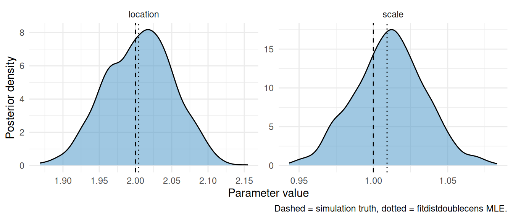

Fitting delay distributions with negative support
Source:vignettes/fitting-negative-support.Rmd
fitting-negative-support.Rmd1 Introduction
Some delays of epidemiological interest can be negative. The serial interval, the time between symptom onset in a primary case and symptom onset in a secondary case, is a common example: pre-symptomatic transmission means the secondary case can develop symptoms before the primary case, giving a negative observed serial interval. Distributions on the non-negative reals (lognormal, gamma, Weibull) cannot represent this and the package’s current analytical solutions all assume non-negative support.
In this vignette we estimate the parameters of a logistic-distributed serial interval from doubly-censored, right-truncated samples that include negative observations.
We use [fitdistdoublecens()] for a quick MLE fit and [pcd_cmdstan_model()] for the Bayesian fit.
The logistic is symmetric with slightly heavier tails than the normal, has support on the whole real line, and ships in base R as dlogis/plogis/qlogis/rlogis.
On the Stan side no analytical primary-censored solution is registered for it, so the model integrates the CDF numerically via the ODE path.
2 Simulating censored serial interval data
We pick a logistic with location 2 and scale 1 and impose a finite lower truncation L = -3: in our worked example we observed serial intervals only from pairs whose secondary case had symptom onset no more than three days before the primary.
A finite L < 0 is the case the Stan side could not previously handle and is the headline addition here.
Setting L = -Inf (the package default) would also work and would correspond to “no lower truncation”.
set.seed(1)
n <- 2000
location_true <- 2
scale_true <- 1
lower_truncation <- -3
pwindows <- sample.int(3, n, replace = TRUE)
swindows <- sample.int(3, n, replace = TRUE)
obs_times <- sample(10:14, n, replace = TRUE)
generate_sample <- function(pwindow, swindow, obs_time) {
rprimarycensored(
1, rlogis,
location = location_true, scale = scale_true,
pwindow = pwindow, swindow = swindow,
L = lower_truncation, D = obs_time
)
}
samples <- mapply(generate_sample, pwindows, swindows, obs_times)
delay_data <- data.frame(
pwindow = pwindows,
swindow = swindows,
obs_time = obs_times,
start_relative_obs_time = lower_truncation,
observed_delay = samples,
observed_delay_upper = pmin(obs_times, samples + swindows)
)
cat(sprintf(
paste0(
"Observed serial intervals span [%s, %s] with %d negative values ",
"out of %d.\n"
),
min(samples), max(samples), sum(samples < 0), n
))## Observed serial intervals span [-3, 9] with 111 negative values out of 2000.The simulated data contains a meaningful number of negative observed delays. A non-negative delay distribution would have no way to assign probability to those rows.
We aggregate the data on its unique combinations of integer-valued covariates so the likelihood is computed once per unique observation rather than once per sample.
delay_counts <- delay_data |>
summarise(
n = n(),
.by = c(
pwindow, obs_time, start_relative_obs_time,
observed_delay, observed_delay_upper
)
)
head(delay_counts)## pwindow obs_time start_relative_obs_time observed_delay observed_delay_upper
## 1 1 12 -3 -3 0
## 2 3 14 -3 2 4
## 3 1 13 -3 3 6
## 4 2 14 -3 0 3
## 5 1 10 -3 0 2
## 6 3 12 -3 2 3
## n
## 1 4
## 2 15
## 3 26
## 4 16
## 5 14
## 6 9
3 MLE fit with fitdistdoublecens()
fitdistdoublecens() wraps fitdistrplus::fitdistcens() so we can pass any distribution name for which dlogis/plogis/qlogis are available.
We pass our left-truncation point L = -3 via the L column and the upper interval via the right column.
fitdist_data <- mutate(
delay_data,
left = observed_delay,
right = observed_delay_upper,
L = start_relative_obs_time,
D = obs_time
)
mle_fit <- fitdistdoublecens(
fitdist_data,
distr = "logis",
start = list(location = 1, scale = 1),
pwindow = "pwindow",
L = "L",
D = "D"
)
summary(mle_fit)## Fitting of the distribution ' pcens_dist ' by maximum likelihood
## Parameters :
## estimate Std. Error
## location 2.004487 0.04426984
## scale 1.009202 0.02382623
## Loglikelihood: -3006.411 AIC: 6016.821 BIC: 6028.023
## Correlation matrix:
## location scale
## location 1.00000000 -0.03366937
## scale -0.03366937 1.00000000The MLE point estimates land close to the true location = 2, scale = 1.
4 Bayesian fit with pcd_cmdstan_model()
Now we use our packaged Bayesian model as a comparison. The only difference to usage elsewhere in the package is that here we pass our left-truncation point through the start_relative_obs_time column.
We use weakly informative priors that are not centred on the simulation truth: a wide Normal(0, 5) on the location and Normal(0, 2.5) on the scale.
The priors argument takes two vectors indexed by delay-distribution parameter position: priors$location[i] is the prior mean for parameter i and priors$scale[i] is the prior standard deviation.
pcd_data <- pcd_as_stan_data(
delay_counts,
delay = "observed_delay",
delay_upper = "observed_delay_upper",
relative_obs_time = "obs_time",
start_relative_obs_time = "start_relative_obs_time",
dist_id = pcd_stan_dist_id("logistic", "delay"),
primary_id = pcd_stan_dist_id("uniform", "primary"),
param_bounds = list(lower = c(-Inf, 0), upper = c(Inf, Inf)),
primary_param_bounds = list(lower = numeric(0), upper = numeric(0)),
priors = list(location = c(0, 0), scale = c(5, 2.5)),
primary_priors = list(location = numeric(0), scale = numeric(0))
)
pcd_model <- pcd_cmdstan_model()
pcd_fit <- pcd_model$sample(
data = pcd_data,
chains = 2,
parallel_chains = 2,
iter_warmup = 500,
iter_sampling = 500,
refresh = ifelse(interactive(), 50, 0),
show_messages = interactive()
)
pcd_fit$summary("params")## # A tibble: 2 × 10
## variable mean median sd mad q5 q95 rhat ess_bulk ess_tail
## <chr> <dbl> <dbl> <dbl> <dbl> <dbl> <dbl> <dbl> <dbl> <dbl>
## 1 params[1] 2.00 2.00 0.0438 0.0417 1.93 2.08 1.00 1146. 746.
## 2 params[2] 1.01 1.01 0.0239 0.0244 0.972 1.05 1.00 686. 583.The posterior 90% credible intervals contain the true parameters and the chains mix well (rhat close to 1).
5 Comparing estimates
draws <- pcd_fit$draws("params", format = "data.frame")
mle_pt <- coef(mle_fit)
plot_data <- bind_rows(
data.frame(
parameter = "location",
value = draws[["params[1]"]],
stringsAsFactors = FALSE
),
data.frame(
parameter = "scale",
value = draws[["params[2]"]],
stringsAsFactors = FALSE
)
)
truth <- data.frame(
parameter = c("location", "scale"),
truth = c(location_true, scale_true),
mle = c(mle_pt[["location"]], mle_pt[["scale"]]),
stringsAsFactors = FALSE
)
ggplot(plot_data, aes(x = value)) +
geom_density(fill = "#4292C6", alpha = 0.5) +
geom_vline(data = truth, aes(xintercept = truth), linetype = "dashed") +
geom_vline(data = truth, aes(xintercept = mle), linetype = "dotted") +
facet_wrap(~parameter, scales = "free") +
labs(
x = "Parameter value",
y = "Posterior density",
caption = "Dashed = simulation truth, dotted = fitdistdoublecens MLE."
) +
theme_minimal()
Figure 5.1: Posterior density (cmdstan) and MLE point estimate against the simulation truth.
Both methods recover the simulation truth. The MLE returns a point estimate and asymptotic standard errors; the Bayesian fit returns the full posterior at the cost of longer runtime.
6 Other distributions with support on the reals
The same workflow extends to any signed-support delay that has a d/p/q triple in R and a Stan dispatch.
pcd_distributions and pcd_stan_dist_id() document the registered options; the negative-support choices currently available on the Stan side are:
- Logistic (used here): symmetric, slightly heavier tails than the normal, in base R.
-
Cauchy: symmetric, very heavy tails. Useful for serial intervals where extreme negative values cannot be ruled out. In base R as
dcauchy/pcauchy/qcauchy/rcauchy. -
Gumbel: right-skewed, supports the reals. A natural choice when the right tail is markedly heavier than the left, but not in base R; you would either define
dgumbel/pgumbel/qgumbel/rgumbelin your script (the standard formulae are short) or attach a package such asextraDistr.
7 Adapting this vignette
-
Real serial-interval data: replace the simulated
delay_datawith an empirical table of(observed_delay, observed_delay_upper, pwindow, obs_time, start_relative_obs_time)rows. -
No left truncation: drop the
start_relative_obs_timecolumn (or set it to-Inf) to fit without lower truncation. -
Different distribution: swap
rlogis/"logis"/"logistic"for any of the alternatives listed above (or any base-R / package-supplied distribution with a matchingd/p/q/rset on the R side).